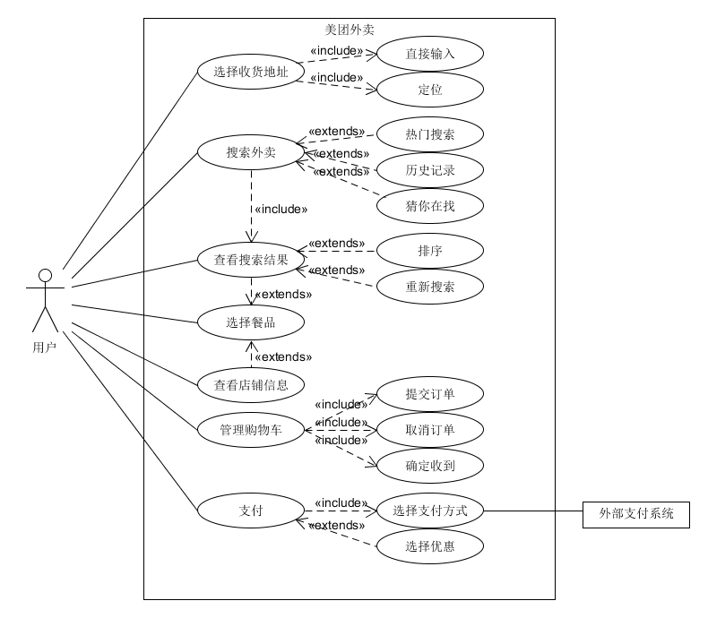
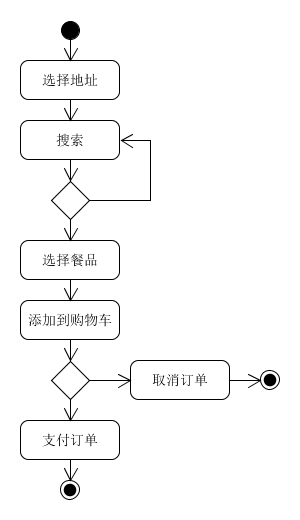
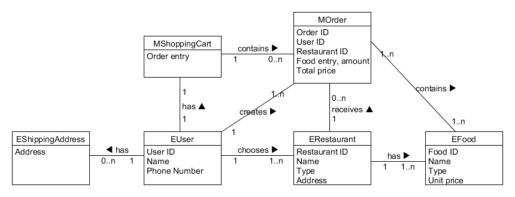
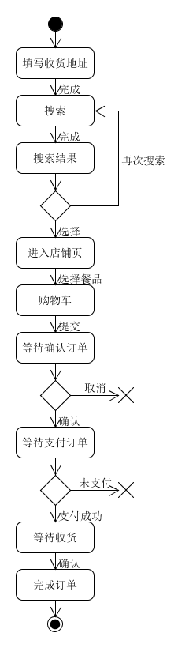
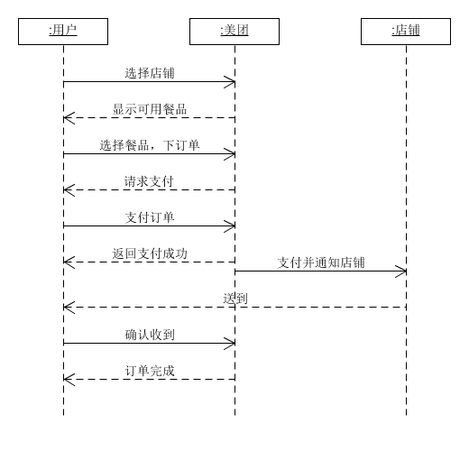

用例模型

活动图

领域模型

状态图

系统顺序图



|
|
“数据库逻辑模型”与“领域模型”的异同
相同点：均描述实体之间关系
不同点：领域模型是对领域内的概念类或现实世界中对象的可视化表示，面向用例；而数据库逻辑模型定义数据库物体结构及其关系，面向的是内容。


参考现有或过去的类似功能产品，并改进部分流程，了解用户对现有产品的意见和对设计的新功能的反馈
支付方式，引入更为流行的移动支付
| Name | Imp | Est | How to demo |
|---|---|---|---|
| 搜索酒店 | 30 | 10 | 选择城市、日期，或输入关键字，点击搜索 |
| 预定酒店 | 40 | 10 | 过滤搜索结果，选择酒店 |
| 确认订单 | 15 | 10 | 显示订单详情，填写个人信息 |
| 支付订单 | 10 | 5 | 选择支付方式，跳转到外部支付页 |

在构建流程图时，在一些复杂的状态中可以找到共同点，就能分解出子用例。


1)摘要，一段简洁的概要，通常用在主成功场景
优点：快速编写、简洁
缺点：不够细致
2)非正式，多个非正式的段落格式，用几个段落覆盖不同场景，用于早期的需求分析过程
优点：编写简便，比摘要式用例文本详细一些，有利于进一步认识问题
缺点：不够正式，需要在后续阶段精化
3)详述，即详细地编写用例所有步骤和各种变化，同时具有补充部分，如前置条件和成功保证
优点：细节充足，正式，具有结构性
缺点：编写耗时长，繁琐
瀑布模型的优点：
瀑布模型的缺点：
增量模型的优点：
增量模型的缺点：
螺旋模型的优点：
螺旋模型的缺点：
第1点体现了用户驱动的开发，第3点体现了风险驱动的开发。
初始阶段的目标是为系统建立商业案例并确定项目的边界。 初始阶段结束时是第一个重要的里程碑：生命周期目标(Lifecycle Objective)里程碑。生命周期目标里程碑评价项目基本的生存能力。
因为范围和内容是可以通过各种规范的流程更改的，而工期和质量可能会受各种因素的影响。
通过采用增量、迭代开发的策略，降低了在一个增量上的开支风险。如果开发人员重复某个迭代，那么损失只是这一个开发有误的迭代的花费。通过在开发早期就确定风险，可以尽早来解决而不至于在开发后期匆匆忙忙。降低了产品无法按照既定进度进入市场的风险。

本人负责网页前端开发
1.
(1)
软件工程的定义有多种，其中一个定义是“系统性地运用计算机科技的知识、方法和经验，来对一个软件进行设计、实现、测试和编写文档”。在国标GB/T11457-2006《信息技术 软件工程术语》中，其定义为“应用计算机科学理论和技术以及工程管理原则和方法，按预算和进度，实现满足用户要求的软件产品的定义、开发、和维护的工程或进行研究的学科”。
(2)
软件危机是指在限定的时间内编写一个实用、有效的计算机程序的困难，在软件开发和维护中可能遇到的一系列严重问题，软件危机的本源是复杂、期望和改变。
Constructive Cost Model: 一种软件成本估算方法。这种模型使用一种基本的回归分析公式，使用从项目历史和现状中的某些特征作为参数来进行计算。
基本COCOMO的等式如下：
E=ab(KLOC)bb
D=cb(E)db
P=E/D
其中E是用“人月”来计算的工作量，D是指累积的开发时间（月），KLOC是指对最终发布的代码行数的估计（千行代码），P指需要的人数。
其中的一些系数 ab bb cb db 如下表所示：
| Software project | ab | bb | cb | db |
|---|---|---|---|---|
| Organic | 2.4 | 1.05 | 2.5 | 0.38 |
| Semi-detached | 3.0 | 1.12 | 2.5 | 0.35 |
| Embedded | 3.6 | 1.20 | 2.5 | 0.32 |
基本COCOMO适用于快速、早期地粗略估算软件成本。
(4)
(5)
(6)
SWEBOK 是 IEEE 计算机学会职业实践委员会主持的一个项目，其目标为：
STINGY SAT is the following problem: given a set of clauses (each a disjunction of literals) and an integer k, find a satisfying assignment in which at most k variables are true, if such an assignment exists. Prove that STINGY SAT is NP-complete.
证明：假设 SAT 问题有 n 个变量，则该 SAT 问题等价于 k = n 的 STINGY SAT 问题。这样的归约过程的时间复杂度为 O(1)，是多项式时间复杂度。
如果 STINGY SAT 问题有多项式时间算法，那么 SAT 问题也有多项式时间算法，然而 SAT 是 NP-complete 问题，因此 STINGY SAT 也是NP-complete问题。
Given two words word1 and word2, find the minimum number of steps required to convert word1 to word2. (each operation is counted as 1 step.)
You have the following 3 operations permitted on a word:
a) Insert a character
b) Delete a character
c) Replace a character
编辑距离是经典动态规划问题之一。
边界条件： dp[i][0] = i; dp[0][i] = i.
状态转移：如果字母 word1[i - 1] 和 word2[j - 1] 相同，则 dp[i][j] = dp[i - 1][j - 1] ，否则 dp[i][j] 为 dp[i - 1][j - 1] + 1，dp[i - 1][j] + 1，dp[i][j - 1] + 1 之间的最小值（分别表示替换、删除、插入操作）
|
|
#Minimum Path Sum
Given a m x n grid filled with non-negative numbers, find a path from top left to bottom right which minimizes the sum of all numbers along its path.
Note : You can only move either down or right at any point in time.
动态规划问题。到每一格的总代价为此格代价，加上上方与左方格总代价的最小值。
|
|